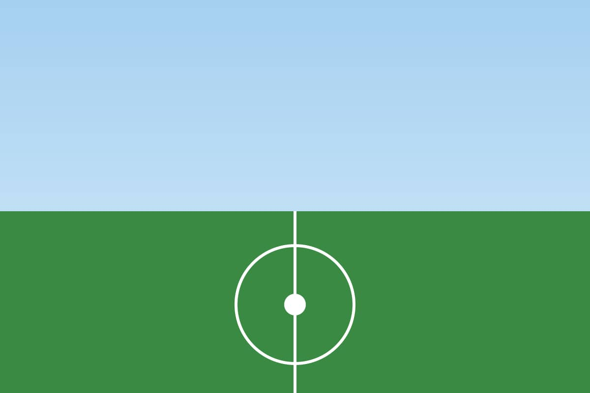

Rovers snatch late winner to go top of the table
Substitute Dani Kowalski scores in the 89th minute against Marlow Town.

Dani Kowalski came off the bench to score in the 89th minute as Riverton Rovers beat Marlow Town 2-1 on Saturday and moved to the top of the league for the first time in four seasons.
Marlow had led through a first-half penalty, and the visitors defended deep for most of the second period. Rovers equalised through captain Ellis Burke, who finished a low cross from close range on the hour.
The winner came from a corner that was only half cleared. Kowalski, on the pitch for just twelve minutes, controlled the ball on his chest and volleyed into the far corner.
I have not stopped smiling. You dream of moments like that, and then it happens at your own ground.
Manager Rhys Penhallow praised the squad's patience. Rovers have won five of their last six at home, and travel to Eastgate next weekend with a three-point cushion at the top.
Tickets for the Eastgate trip are on sale at the club shop and the supporters' coach is already almost full.